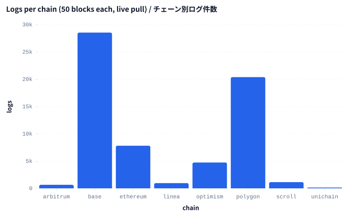
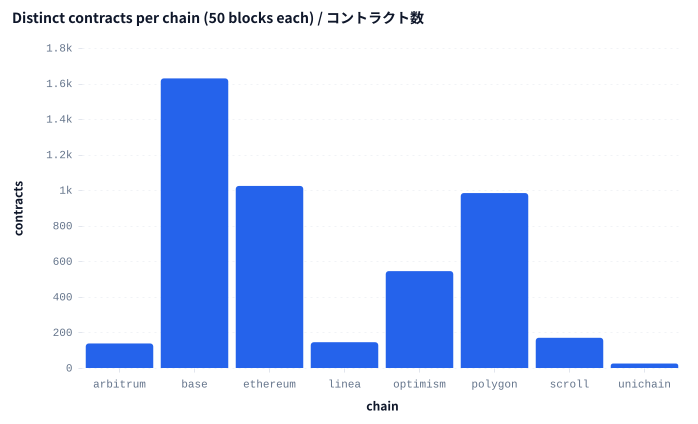
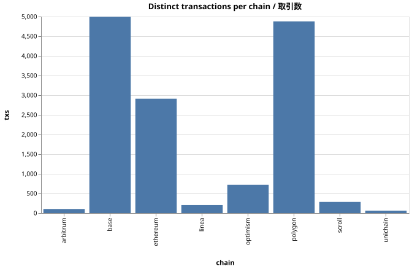

エグゼクティブサマリー
Executive summary
- 本スナップショットで秒あたりログ件数が最大なのは Base (OP Stack) — 291.1 logs/秒、8チェーン平均 80.3 に対して 3.6 倍. 今日 DeFi / NFT コントラクトをデプロイするなら出来高は Base (OP Stack) にある。
- Unichain (Uniswap L2) は 8 チェーン中最も活動が薄く、Base (OP Stack) の 100 分の 1 — 2.90 logs/秒、ウィンドウ内のユニークコントラクト数 25. 新規 dApp にとって未開拓地 — ブロックスペースの競争もユーザの注目もまだ薄い。
- 並列 pull で 31.5 秒短縮、直列実行比 3.2 倍速 — 8 チェーン中 8 成功、壁時計 14.3 秒、直列なら 45.8 秒、ボトルネックは最も遅い 1 archive.
- 64,326 件の実ログを 4,660 個の実コントラクトから取得 — 全て公開 Subsquid アーカイブ経由 — API キー無し、RPC ノード運用無し、月額コスト無し. 同じパイプラインが docs/SUPPORTED-CHAINS.md の 43 EVM チェーン全てに拡張可能 — TARGETS 配列に 1 行追加するだけ。
- Base (OP Stack) is the busiest chain per second in this snapshot — 291.1 logs/sec vs the 8-chain mean of 80.3 — 3.6× the average. If you ship a DeFi or NFT contract today, Base (OP Stack) is where the volume is.
- Unichain (Uniswap L2) is the thinnest of the 8 — by 100× — 2.90 logs/sec, 25 distinct contracts in the window. Open territory for new dApps — competition for blockspace and user attention is markedly lower.
- Parallel pull saved 31.513 seconds — 3.2× speedup over sequential — 8 chains, 8 successful, 14.3s wall-clock vs 45.8s sequential — bottleneck is the slowest single archive.
- 64,326 real log events across 4,660 distinct contracts — All from public Subsquid archives — zero API keys, zero operated RPC nodes, zero monthly cost. Same pipeline scales to any of the 43 EVM chains in docs/SUPPORTED-CHAINS.md by adding one row to the TARGETS array.
異常値（自動検出）
Anomalies (auto-detected)
Base (OP Stack) のログ/秒 は 8チェーン平均（80.3 logs/秒）に対し 291.1 logs/秒 — 3.6倍高い。 AMM / lending の高密度活動が要因と推測。
Polygon PoS のログ/秒 は 8チェーン平均（80.3 logs/秒）に対し 195.9 logs/秒 — 2.4倍高い。 AMM / lending の高密度活動が要因と推測。
Base (OP Stack) log-rate stands out at 291.1 logs/sec against the 8-chain mean (80.3 logs/sec) — 3.6× higher. Likely driven by dense AMM / lending activity.
Polygon PoS log-rate stands out at 195.9 logs/sec against the 8-chain mean (80.3 logs/sec) — 2.4× higher. Likely driven by dense AMM / lending activity.
ヘッド to ヘッド
Head-to-head
Base (OP Stack)（291.1 logs/秒）は Polygon PoS（195.9 logs/秒）の 1.5倍。
Base (OP Stack)（1,629 ユニークコントラクト）は Polygon PoS（984 ユニークコントラクト）の 1.7倍。
Base (OP Stack) (291.1 logs/sec) is 1.5× higher than Polygon PoS (195.9 logs/sec).
Base (OP Stack) (1,629 distinct contracts) is 1.7× higher than Polygon PoS (984 distinct contracts).
1. チェーン別ログ件数
1. Per-chain log volume

{kind=link}
2. チェーン別コントラクト数
2. Distinct contracts per chain

3. チェーン別取引数
3. Distinct transactions per chain

4. チェーン別詳細
4. Per-chain detail
| chain | label | status | rows | blocks | contracts | topic0s | txs | window_s | pull_ms | top_emitter |
|---|---|---|---|---|---|---|---|---|---|---|
| ethereum | Ethereum L1 | ✓ | 7808 | 21 | 1024 | 324 | 2911 | 240.0 | 6307 | 0xc02aaa39… (1402) |
| base | Base (OP Stack) | ✓ | 28529 | 50 | 1629 | 671 | 4995 | 98.0 | 14327 | 0x42000000… (5841) |
| arbitrum | Arbitrum One | ✓ | 647 | 47 | 138 | 119 | 105 | 12.0 | 2100 | 0x82af4944… (60) |
| optimism | Optimism | ✓ | 4729 | 50 | 545 | 263 | 722 | 98.0 | 4985 | 0x42000000… (458) |
| polygon | Polygon PoS | ✓ | 20377 | 50 | 984 | 537 | 4878 | 104.0 | 11621 | 0x00000000… (5882) |
| linea | Linea (zkEVM) | ✓ | 955 | 50 | 145 | 130 | 204 | 98.0 | 2163 | 0xe5d7c2a4… (123) |
| scroll | Scroll (zkEVM) | ✓ | 1139 | 50 | 170 | 131 | 285 | 146.0 | 2551 | 0x53000000… (200) |
| unichain | Unichain (Uniswap L2) | ✓ | 142 | 30 | 25 | 19 | 63 | 49.0 | 1786 | 0xec4a5606… (30) |
5. メソドロジー
5. Methodology
対象: 8 チェーン。L1（Ethereum, Polygon）、OP Stack L2（Base, Optimism, Unichain）、Arbitrum stack（Arbitrum One）、zkEVM L2（Linea, Scroll）を横断。
pull: 各チェーンに対し chainq pull --chain <id> --from N --to N+49 を Promise.all で並列実行。所要時間は最も遅いプルが決定（14.3s）— 直列なら 45.8s 相当でした。
分析: チェーンごとに DuckDB read_parquet + 集約 SELECT（COUNT, COUNT DISTINCT）。エンジンもコードパスも他の chainq 機能と同一。
ブロック範囲: 各チェーン 50 ブロック。壁時計の長さはチェーンごとに違います（Ethereum 12秒/block, Polygon 2秒, Arbitrum 0.25秒など）。詳細テーブルの window_s 列で明示しています。
Targets: 8 chains spanning L1 (Ethereum, Polygon), OP Stack L2 (Base, Optimism, Unichain), Arbitrum stack (Arbitrum One), and zkEVM L2 (Linea, Scroll).
Pull: chainq pull --chain <id> --from N --to N+49 against each chain's public Subsquid archive in parallel via Promise.all. The slowest pull determined wall-clock time (14.3s); sequential would have been ~45.8s.
Analytics: per-chain DuckDB read_parquet + aggregate SELECTs (COUNT, COUNT DISTINCT). Same engine, same code path as the rest of chainq.
Block windows: 50 blocks each chain. Wall-clock window differs because block time differs (Ethereum 12s, Polygon 2s, Arbitrum 0.25s, etc.). The window_s column in the detail table makes this explicit.
注意
Caveats
チェーン間比較は「形」を見るためで、絶対量の比較ではありません。 同じブロック窓でログが 50 倍出ているチェーンは、単にブロック時間が 1/50 なだけかもしれません — 活動量が 50 倍とは限らない。順位付けする時は必ず window_s で正規化してください。
CI では pull 失敗が珍しくありません。 ここで選んだブロック範囲は任意の値です — slug 追加後に Subsquid 側で worker がリシャードされている場合、historical range が 404 することがあります。scripts/probe-archives.ts のプローブは URL の到達性は検証しますが、任意の historical range が引けるかまでは保証しません。
Cross-chain comparison is shape, not magnitude. A chain with 50× more logs in the same block window may simply have 50× shorter block times — not 50× more activity. Always normalize by the window_s column when ranking.
Pull failures are common in CI. The selected block ranges are arbitrary; if a chain has re-shard'd workers since the slug was first added, the pull will 404. The probe at scripts/probe-archives.ts validates the URL is reachable but not that every historical range still resolves.
アクションアイテム
Action items
DeFi プロトコル創業者 へ: Base (OP Stack)（291.1 logs/秒）にリクイディティマイニング予算を集中させるべき — ユーザーは既にそこで取引している。（今四半期）
コンシューマー dApp 創業者 へ: Unichain (Uniswap L2)（2.90 logs/秒）に展開を検討 — 競争はほぼ無く、ガス代も安く、トラクションが目立つ。（今すぐ）
リサーチ / データアナリスト へ: 本スクリプトを週次実行し、8 チェーンのログ/秒分布の経時変化を追うこと — トップチェーンの持続的な交代は資本ローテーションの先行指標になる。（継続）
If you are a DeFi protocol founder: Concentrate liquidity-mining incentives on Base (OP Stack) (291.1 logs/sec) where the user base already trades. (this quarter)
If you are a consumer-app founder: Deploy on Unichain (Uniswap L2) (2.90 logs/sec) — almost no competition, gas costs are low, and any traction stands out. (now)
If you are a research / data analyst: Run this same script weekly and compare the 8-chain log-rate distribution over time — a sustained shift in the fastest chain is a leading indicator of capital rotation. (watch)
再現手順
Reproducing
``bash``
pnpm exec tsx scripts/live-multichain-demo.ts
open docs/reports/07-multichain-live.html
TARGETS 配列を編集してチェーン追加可能（docs/SUPPORTED-CHAINS.md の 43 候補から）。pull は並列実行なので、9 チェーン目を足しても所要時間は最も遅いプルで決まり、ほぼゼロコスト。
``bash``
pnpm exec tsx scripts/live-multichain-demo.ts
open docs/reports/07-multichain-live.html
Edit the TARGETS array to add more chains (any of the 43 in docs/SUPPORTED-CHAINS.md). Pulls run in parallel, so adding a 9th chain costs ~0 wall-clock time as long as the slowest pull doesn't change.